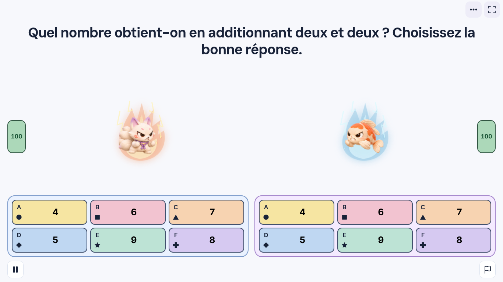
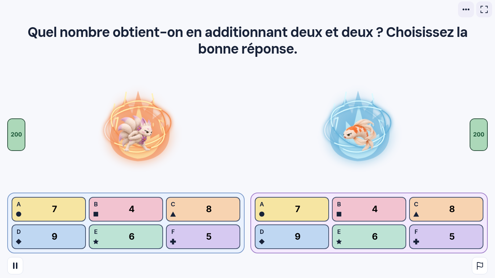
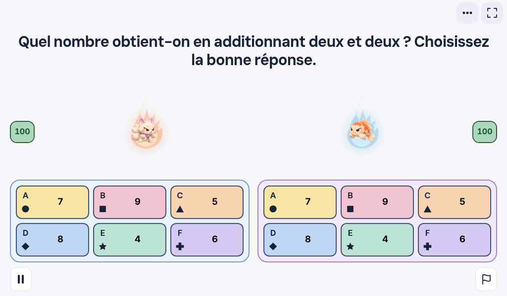
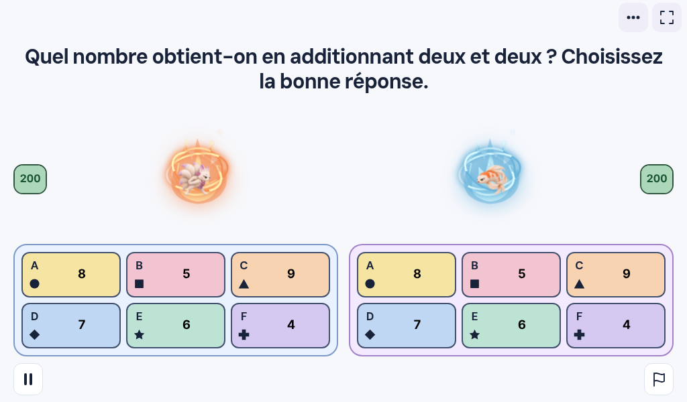
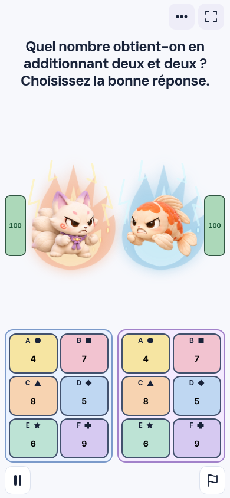
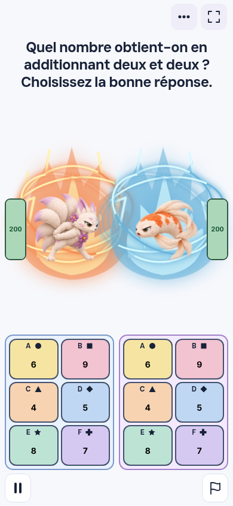
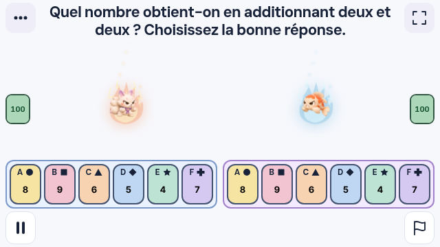
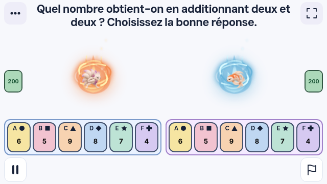

Duels : mascottes face à face et espace pour leurs animations
Personnages réduits, réserves au-dessus et au-dessous. Question et réponses restent visibles.
1366x768 · Mini · critique ×3
1366x768 · Adulte · critique ×4
1024x600 · Mini · critique ×3
1024x600 · Adulte · critique ×4
390x844 · Mini · critique ×3
390x844 · Adulte · critique ×4
640x360 · Mini · critique ×3
640x360 · Adulte · critique ×4